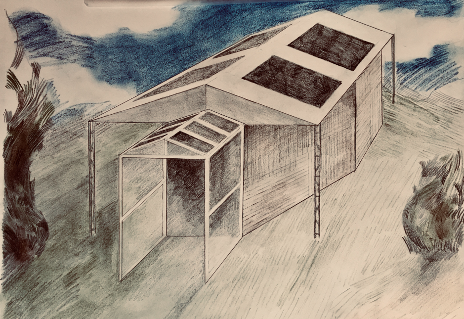
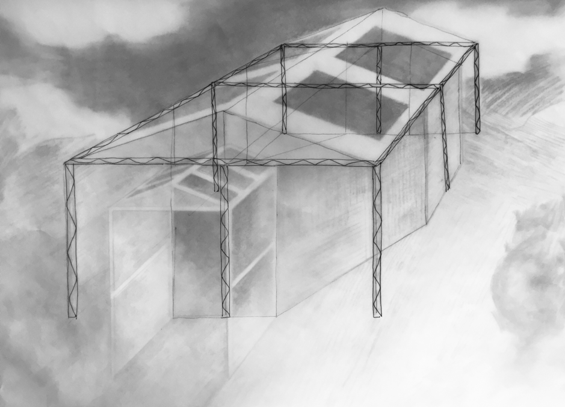

The Greenhouse - from the ground up
The concept is simple. The execution, a little less so. Build a venue entirely out of found and recycled materials, and use it to host 8 shows for a month. Without any electricity of course.
The Premise
Right now, the venue is simply an idea — we’ll be building it in July, ready for a month full of fun and excitement in August. Keep an eye out on this page for photos and videos as the process moves on. But for now, we’re going with an idea.
The skeleton for The Greenhouse will be a square of triangular lighting truss, with sides of 7m. The structure will be around 2.5m high, with a total footprint of 49m2. We will then be using the skeleton to support an octagonal structure made mostly out of wood and old sails from ships. This will go on the inside of the square, and take up roughly 36m2.
We anticipate that the capacity for the venue will be between 30 and 50 — seats will be made out of more found and recycled materials!
Sounds nice and simple doesn’t it? Don’t worry, we’ve got some pictures below just to clarify ;)
The skeleton for The Greenhouse will be a square of triangular lighting truss, with sides of 7m. The structure will be around 2.5m high, with a total footprint of 49m2. We will then be using the skeleton to support an octagonal structure made mostly out of wood and old sails from ships. This will go on the inside of the square, and take up roughly 36m2.
We anticipate that the capacity for the venue will be between 30 and 50 — seats will be made out of more found and recycled materials!
Sounds nice and simple doesn’t it? Don’t worry, we’ve got some pictures below just to clarify ;)
Access
While we’re here, we’d like to talk a bit about accessibility. The venue will be completely accessible — we’ve got a whole section of our website dedicated to that, so head over there to find out more. As well as that, tickets to all of our shows will cost just £5 — and there are bulk discounts. Feel free to contact us if you have any questions!

Designer's rendering of the venue, clearly showing the key elements of structural and roof design.

A sketch that more clearly shows the skeleton of the structure, made out of lighting truss.
♦


Designed by Mia Ferraiolo
© Greenhouse Theatre
© Greenhouse Theatre